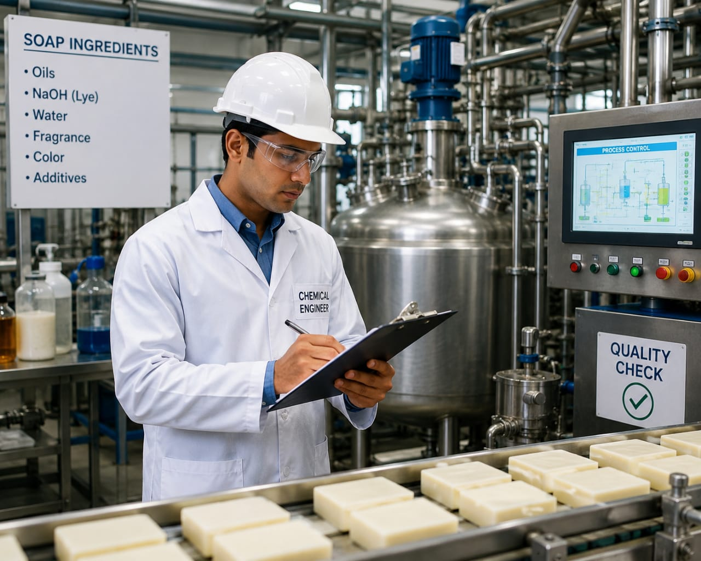

- You all have used soap or shampoo, right?
- These products are made by mixing various ingredients in the right way.
- Imagine a factory making thousands of soap bars every day.
- Someone has to check the quality of the ingredients used.
- They also make sure the ingredients are mixed properly and the final product has good quality.
- The person who designs, monitors and improves these processes is called a Chemical Engineer.
- 👉 In simple words: Chemical Engineers help manufacture useful products from raw materials.
Chemical Engineer
What Do They Do?

🎓 How to Become a Chemical Engineer
You have two options:
-
Start early with a Diploma
After Class 10, you can choose a relevant diploma course. Complete the diploma and join the second year of an engineering course by applying through lateral entry. -
Finish Class 12
Complete Class 11 and 12, then you can do a B.Tech./B.E. in the relevant field.
These diploma courses help students learn chemical manufacturing, industrial processes, production techniques, and quality control systems.
Diploma in Chemical Engineering
Duration: 3 Years
Eligibility: 10th Pass with Science and Mathematics (Minimum 35%–50% marks)
Entrance Exam: State Polytechnic Entrance Exams (e.g., JEECUP, Delhi CET, POLYCET)
Note: Students who complete this diploma can work in chemical plants, manufacturing industries, quality control laboratories, and production units, or continue higher studies in Chemical Engineering.
B.Tech / B.E. in Chemical Engineering
Duration: 4 Years
Eligibility: 10+2 with Physics, Chemistry, and Mathematics (PCM) (Minimum 50%–60% aggregate)
Entrance Exam: JEE Main / JEE Advanced / State Level Entrance Exam / University Entrance Exams (VITEEE)
📝 Exam Details
(Click on an exam name to see full details)
JEE Main JEE Advanced State Engineering Entrance Exams University Entrance ExamsB.Tech Lateral Entry in Chemical Engineering
Duration: 3 Years (Direct admission into 2nd year)
Eligibility: 3-Year Engineering Diploma in Chemical Engineering or a related stream (Minimum 45%–50% marks)
Entrance Exam: State Lateral Entry Entrance Tests (e.g., JELET, OJEE LE, TS ECET)
M.Tech / M.E. in Chemical Engineering
Duration: 2 Years
Eligibility: B.E. / B.Tech in Chemical Engineering or a related field (Minimum 50%–60% aggregate)
Entrance Exam: National Level Postgraduate Entrance Exams (GATE, CUET PG)
Note:
(Age limits, marks, and admission process may vary depending on the college or state.
Below are some colleges that offer these courses.
These courses are available in many colleges and universities across India. You can choose colleges based on your location, budget, and entrance exams.)
🏛️ Colleges offering these courses in India
(Tap on a college to view the details)
After Class 10
Rajiv Gandhi Institute of Petroleum Technology (RGIPT), Assam Government Polytechnic College, Kalamassery Government Polytechnic College, Gandhinagar, Gujarat Government Polytechnic, Mydukur, Andra PradeshAfter Class 12
Indian Institute of Technology (IIT) Kanpur, UP Vellore Institute of Technology (VIT), Vellore, Tamil Nadu Indian Institute of Technology (IIT) Varanasi, UPSTEP 1
Imagine you are working as a Chemical Engineer in a soap manufacturing company.
STEP 2
Scientists provide the ingredients needed to make the soap.
STEP 3
Your job is to monitor the entire soap manufacturing process.
STEP 4
You decide how much of each ingredient should be used.
STEP 5
You make sure the ingredients are mixed properly.
STEP 6
You check whether the chemical reactions are happening correctly.
STEP 7
You inspect the finished soap to make sure it is safe and of good quality.
STEP 8
If you enjoy chemistry, manufacturing, and solving problems, this career may be right for you.
Where do Chemical Engineers work? (Job Roles + Growth)
Chemical Engineers work in : Chemical manufacturing plants, Pharmaceutical companies, Petroleum and petrochemical companies, Food processing plants, Fertilizer companies, Biotechnology companies, and Research laboratories.
🟢 Beginner Roles
Junior Process Operator
(After Diploma)
Monitors factory equipment and production processes.
Graduate Engineer Trainee (GET)
(After B.Tech)
Assists engineers in monitoring manufacturing operations.
🔵 Mid-Level Roles
Chemical Process Engineer
(After B.Tech + Experience)
Monitors and improves chemical manufacturing processes.
Plant Commissioning Engineer
(After B.Tech Specialization + Experience)
Tests and starts new factory production units.
🟣 Advanced Roles
Chemical Plant Manager
(After M.Tech / Advanced Specialization)
Manages factory operations and production safety.
VP of Process Technology / Operations
(After Executive Program + Experience)
Leads manufacturing divisions and oversees factory projects.
Soap & Personal Care Industries
Manufacture soaps, shampoos, and cosmetics.
Chemical Manufacturing Companies
Produce chemicals used in everyday products.
Pharmaceutical Industries
Manufacture medicines and vaccines.
Oil & Gas Industries
Produce fuels and petrochemical products.
Food Processing Industries
Manufacture packaged foods and beverages.
Global Manufacturing Companies
Work on large-scale production projects worldwide.
(Click Yes or No for each question)
1. Do you use products like soap, shampoo, toothpaste, or detergents every day?
2. Have you ever wondered how products like soap and shampoo are manufactured in factories?
3. Are you interested in learning how different ingredients are mixed to make products like soap and shampoo?
4. Imagine you are working in a shampoo manufacturing company. Your job is to check the ingredients, monitor the mixing process, and make sure good-quality shampoo is produced every day. Does this sound exciting to you?
5. A company wants to make a new type of soap. They need to mix different ingredients in the right amounts and use the right temperature. Your job is to help decide how the ingredients should be mixed You also make sure the process works properly so that good-quality soap can be produced. Would you enjoy doing this kind of work?